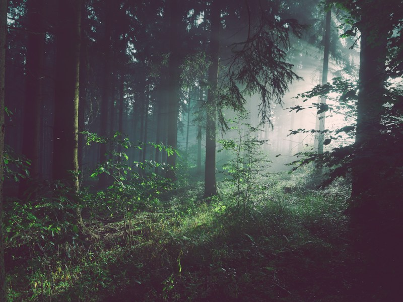
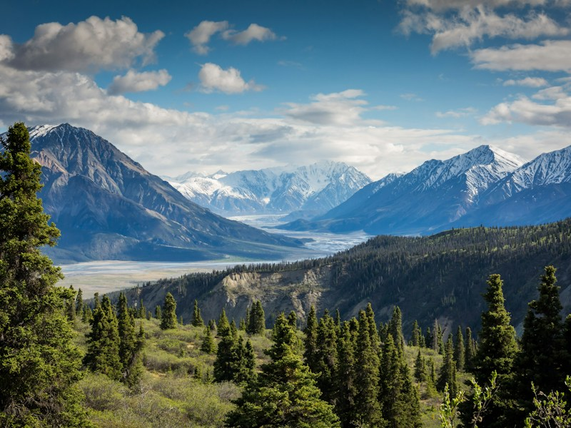
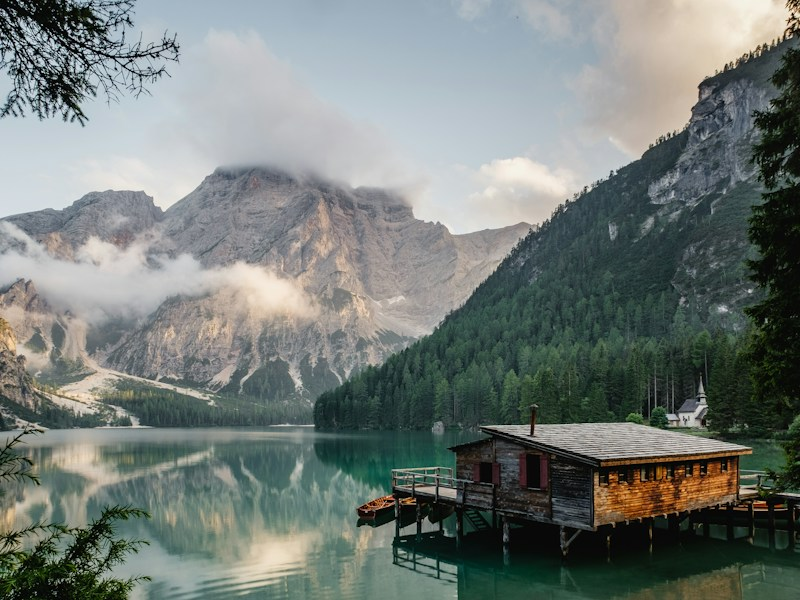
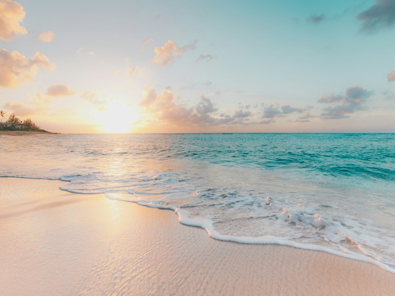
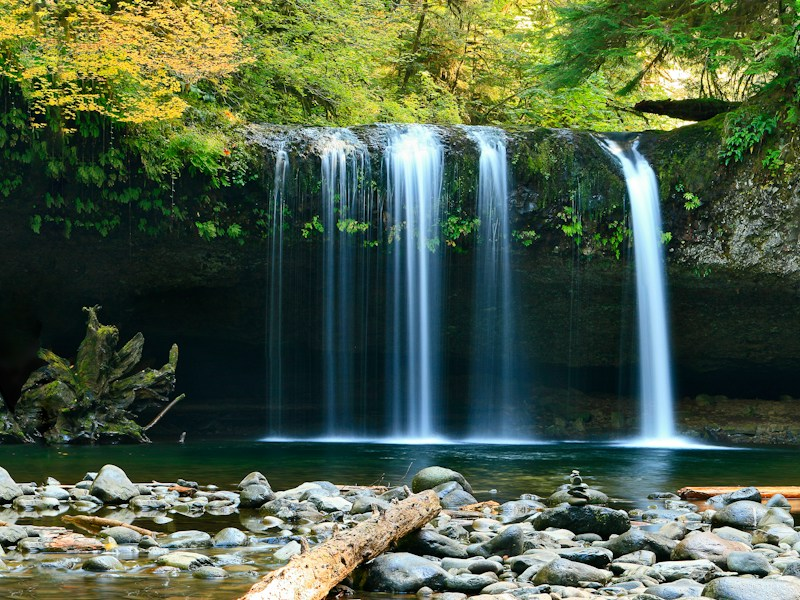
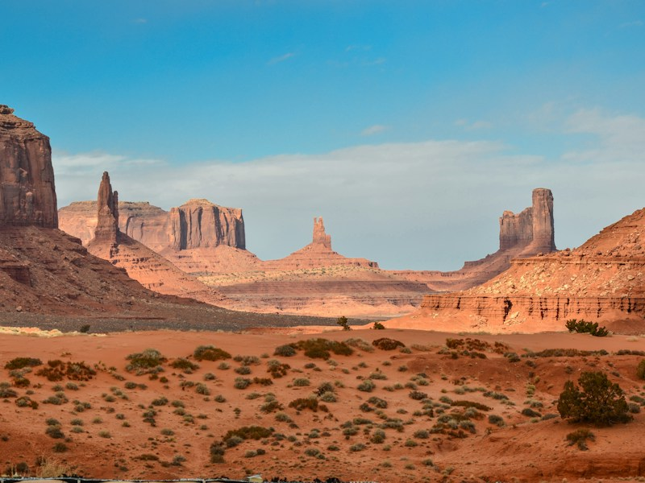
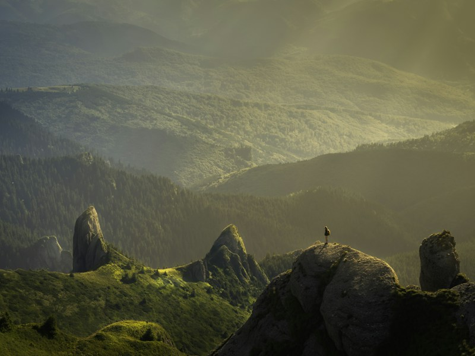
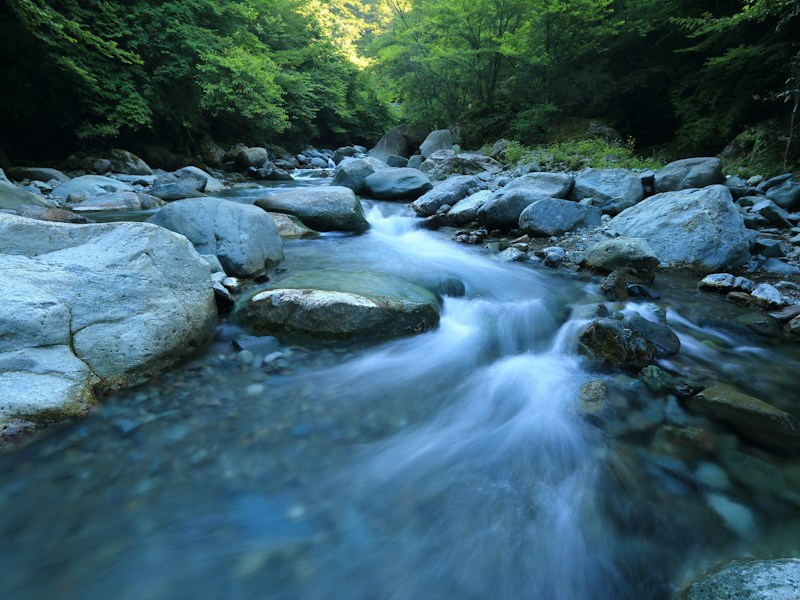
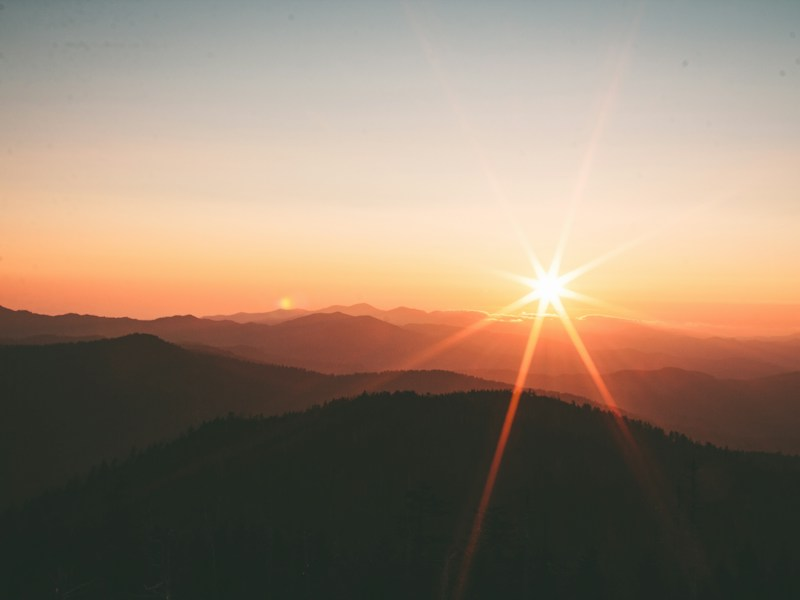

Nature gives us a reason to slow down. A path through the forest, a mountain reflected in still water, or the edge of an empty coast can turn an ordinary moment into a quiet escape.
This collection follows those small invitations to explore. Travel from green woodland to open peaks and sunlit shores, and notice the different colors, textures, and light along the way.
Nine views of the outdoors








